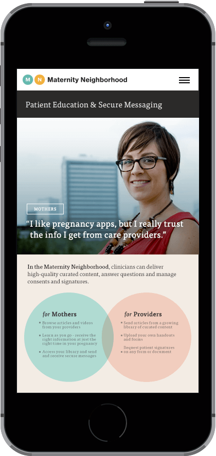
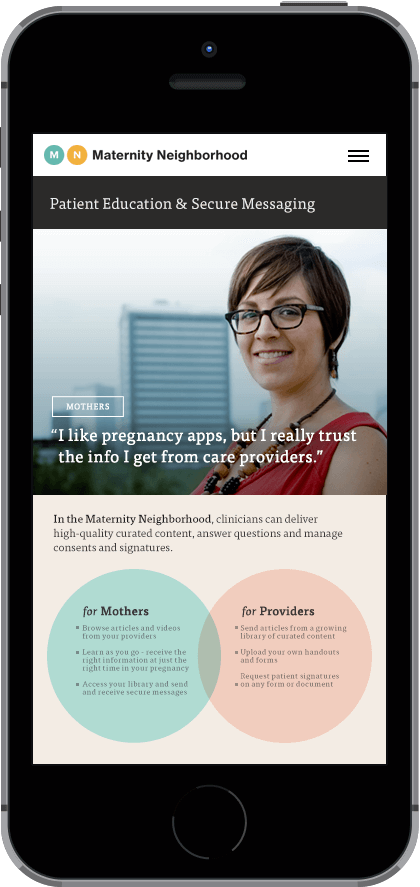

Case Study
Beatport Live
Live is the lastest product on the Beatport roadmap, a streaming DJ platform to broadcast live sets.
In 2004, Beatport began as an online store and news hub for electronic music culture. When it was purchased by SFX in 2013, it became part of a larger umbrella that included ticketing, live events and streaming music. As more energy was being placed around large festivals, SFX strategized how to develop tools to deliver the live experience to fans around the world.
In January 2015, I came on board to create a distinctive theme and overall design language for the new product that would be consistent across many contexts: streaming channel pages, branded events, DJ dashboards, ads, and a Mac app for OSX. My first challenge was to design the web-based channel pages that would capture the frenetic feel of a live event:


While working with developers to build out artist and event pages, I also began sketching the forthcoming OSX app. The app uses native audio and video sources for livestreaming events, queuing upcoming streams, and tracking stats in real time. I worked closely with a Mac developer to design and build something consistent with our web products and still feel native:


In parallel with OSX designs, I also put together a marketing page to promote new features and invite DJs to be whitelisted for early access:

Results: in 6 months, the Live product has evolved from a wireframe sketch to a multi-platform service with a web-based dashboard, OSX app, branding partnerships and successful streams for international festivals like Tomorrowland which attract up to a half-million simultaneous viewers. Live content also factored into the 2015 deal with Spotify.

 
